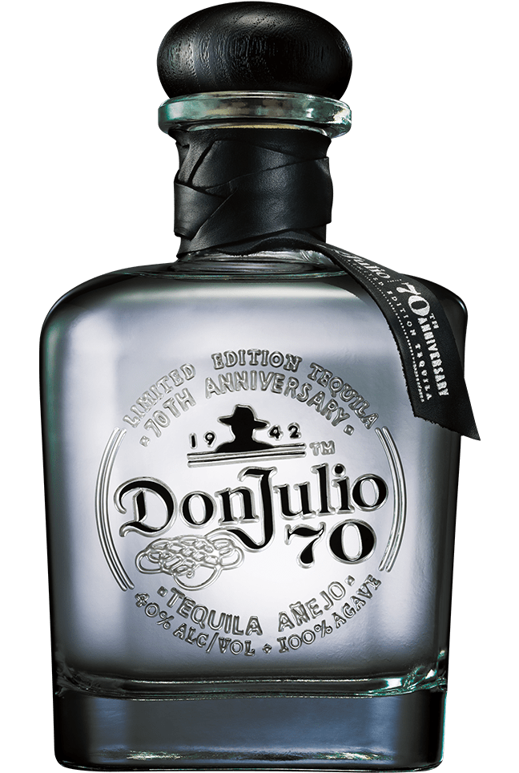

Tequila 70 añejo claro
Lanzamiento del primer tequila Añejo Cristalino del mundo.*
El tequila Don Julio 70® Añejo Cristalino es la culminación de 70 años de conocimiento, experiencia e innovación que combina la suavidad de un tequila Blanco y la complejidad de un tequila Añejo para ofrecer una experiencia de tequila completamente única. El tequila Don Julio 70® Añejo Cristalino se añeja dieciocho meses en barriles de roble blanco americano y luego se filtra cuidadosamente para resaltar su sabor a agave fresco.
